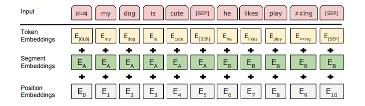
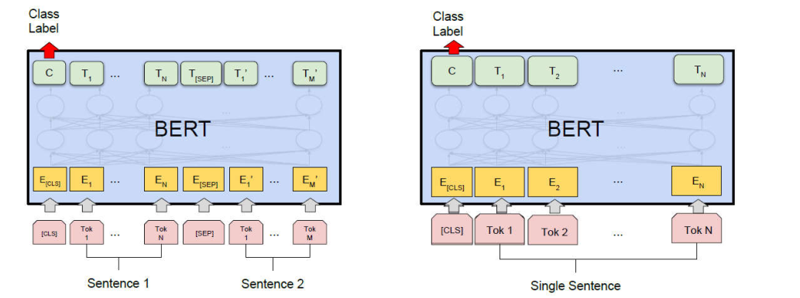

漫谈注意力机制（七）：Transformer模型之BERT、BERT-wwm、RoBERTa、ALBERT简述
本文介绍BERT、RoBERTa、ALBERT、GPT的若干版本等等。
预训练模型可以分为三类：
- 基于特征的策略的模型，如 ELMo 是双向但浅层无法学习更复杂的语义信息
- 基于单向Transformer，如 GPT 是单向深层模型，单向限制预训练模型的表达能力
- 基于双向Transformer，如 BERT 则结合上述两者的优点，双向、深层的预训练模型
“双向建模”往往是必要的，例如在序列标注任务中，典型的词性标注任务，输出标签受到上下文的影响，因此结合上下文对模型性能非常重要。
本文梳理一下基于Transformer，单向、双向预训练模型的原理和思路。总的来说，预训练模型能work的原因如下：
- 底层网络组建是基于SelfAttention无偏置的网络架构
- 恰当设计的学习目标，如MLM、NSP、SOP等自监督学习任务
- 大量的语料，模型需要在大规模的数据上训练
预训练模型往往有一个显著的问题，自监督学习任务往往与模型运用时的任务不一致，这就要求模型最终使用时要配合目标任务的数据fine-tune。
预训练模型与预训练任务
早期的预训练模型的首要目标是训练好的 word embedding，训练好后模型一般不再用于下游任务。这些模型有：
- skip-gram （Google word2vec 中用到）
- GloVe
这类都是浅层模型，能够获得语义表示，但是无法捕捉更深层次的表示，且无法处理上下文、歧义问题。这些模型总结下来有三个特点特点：
- 浅层（因为只需要 word embedding）
- 使用大量语料
- 上下文无关
在 CV 中，如 ImageNet，通过大型带标注的数据集训练通用的模型。BERT出来后，NLP也能通过大规模数据的预训练获得通用的模型。预训练任务的目的是让模型学习一个语言的通用表示，目前来看，预训练任务可包括三类：
- 有监督学习，如从情感分析数据集中学习表示。有监督的预训练常使用在CV中
- 无监督学习，使用密度估计、聚类、隐变量等方法发现文本中的知识，如语言模型（经典的概率密度估计问题）
- 自监督学习，根据局部内容预其他的内容。如掩码语言模型，预测句子中被 MASK 部分。
在 NLP 中，获取有监督数据数据成本太高了，所以通常会使用无标注的预料去训练无监督模型或自监督训练模型。在预训练中，我们得到如下好处：
- 巨大的语料库学习表示
- 更好的模型初始化和泛化
- 当做正则化，避免过拟合
有趣的是，CV 中训练模型也可以采用类似 NLP 中的自监督方法。
BERT
自 Attention Is All You Need 首次提出 Transformer 模型后，各种 Transformer 百花齐放。BERT 是 BERT: Pre-training of Deep Bidirectional Transformers for Language Understanding 的缩写，使用的基础组件是 Transformer Encoder（解读文章见漫谈注意力机制（五）：自注意力与Transformer），属于自编码语言模型，这些工作正如word2vec一样来自Google。它通过 MASK 掉预料中的部分词再重建的过程来学习预料中词语序列中的语义表示信息，称为掩码语言模型（MLM）。
模型架构
把 Transformer Encoder 作为基础组件，即self-Attention，堆叠深层网络，并通过大量的语料进行训练。从论文中看，BASE模型层数为12，隐层维度为768。LARGE模型层数为24，隐层维度为1024。
此外，BERT Embedding 端有三部分组成：
- Segment Embedding，表示以
[SEP]分割的段，对齐到每个Token上，用于区别句子的前后关系，[SEP] 出现可以方便组织左侧上下文与右侧上下文 - Position Embedding，表示位置关系，BERT使用可学习的位置Embedding，用于区别Token的前后关系
- Token Embedding，常规的Embedding，这里的token是subword-level的，有别于过去的char-level
这三个Embedding组合在一起的示意图如下：

用数学表示更为清晰，
这里有一个疑问，为什么这三个Embedding是叠加？而不是拼接？可以从傅里叶分析的角度看，不同粒度（周期）的信号叠加可以构成一个更复杂的信号。
另外需要主要，每个样本的输入以[CLS]为开头，[SEP]为结尾，这一点在实现pipeline时需要注意。这里引入Position Embedding是因为Attention本身无法区分位置。详细可以参考过去的文章Transformer中Position Embedding的原理与思考、漫谈注意力机制（六）：Transformer与位置信息。
学习策略
BERT使用两种方法训练模型：
- masked language model （MLM），给定一个句子，随机把若干词标记为
[MASK]，让模型去预测被标记的词。这个过程类似我们在做原型填空。 - 在document级别的数据集中，给定两个句子（句子间使用 [SEP] 分隔），判断第二个句子是否为第一个句子的连续句。
直接使用 MLM 有两个问题：其一是，训练和预测并不一致，后者在下游任务的 fine-tune 中并没有 [MASK] 标记。为此，论文作如下优化，对输入数据中，随机选择 15% token 做预测，同时做如下操作：
- 80% 标记为 [MASK]
- 10% 随机替换成其他token
- 10% 保持不变
其二是，由于每个batch只有15%的token预测，模型需要更多的迭代才能充分训练。可以看到，BERT本质上是把[MASK]作为噪声，然后还原被MASK的词，因此模型本质上是DAE(Denoising Autoencoder)。
NSP（next sentence prediction），给定两个句子（句子间使用 [SEP] 分隔），判断第二个句子是否为第一个句子的连续句。可以理解成是一个排序判断，如段落重排序任务，只不过元素只有两个。那么，构造样本的方法很简单，从语料库中选择一半的连续句子对，剩下的则是无序的句子对。这种训练方式和自动问答、非自回归生成相关。 CLS位置的输出就是用于NSP的预测判断。
这两种训练方法是结合在一起训练BERT。
模型应用
训练好BERT后有两种应用思路：
- feature-based（参数不再更新）直接拿BERT或其部分组件的输出给其他模型使用
- fine-tuning，结合具体任务调整输出层，给具体的数据上继续训练
微调阶段我们需要关注的参数有 batch_size、learning rate、epoch，这些参数和训练阶段是可以不同的，一般来说需要根据多个不同的参数组合搜索最优的组合。实验表明，基于特征和基于微调的方式都能取得很好的效果。
对于分类任务来说，包括单个句子的分类（如新闻分类）和句子对分类（如文本匹配），可以直接使用[CLS]位置的输出作为类别特征，然后接上softmax输出类别概率，

直接使用[CLS]输出作为分类特征，是因为该输入可以看做上游输出的加权平均，因此是有分类依据的。此外还可以使用GlobalMaxPooling或GlobalAveragePooling，需要注意mask处理。当然还可以纵向来看，结合不同的层做以上操作，如最后两层Pooling后拼接。
对于序列标注任务，如中文分词、NER，其实使用就像LSTM一样，直接接CRF即可。
对于区间预测任务，如MRC这类任务，段落A和问题Q以 [SEP] 为间隔并拼接在一起：Q [SEP] A，然后BERT要找A中的答案的开始位置和终止位置，这里假定段落A有n个tokens，$S,E$都是可学习的向量，
那么答案的开始位置和终止位置预测为，
模型的Loss是start、end位置预测的交叉熵，
论文中提及分类、匹配、标注和区间预测，唯独没有生成任务seq2seq。不过在论文MASS和UNILM补充了BERT缺失的这点。其中MASS使用的是常规的seq2seq架构，分别使用Transformer做encoder和decoder。MASS其实就是提供预训练思想的普通seq2seq，这个没有什么好介绍的。不过我们想要的是，单个BERT就可以做到seq2seq，这样才能体现预训练模型是集大成者。UNILM正好解决这个问题。
分析
相比于 RNN 类，如 LSTM 模型，BERT 能够做到并行训练与推断，深层的动态全连接网络有助于提取不同层次的特征，和静态 Embedding （如 word2vec）相比，BERT 能够根据上下文处理多义词，尽管 ELMo 使用双向 LSTM 抽取特征，但是效果弱于 Transformer。
此外，BERT有很多的改进工作，代表性的包括BERT-wwm-ext、RoBERTa、ALBERT。下面一一介绍。
BERT-wwm
BERT-wwm意为whole word masking的BERT。BERT-wwmext表明为中文版本。该模型并没有架构上的改进，而是训练内容上的修正。BERT-wwm-ext最大的改变是提供词边界信息。
最初的BERT使用wordpiece token有一个严重的问题，MLM模型训练时只预测单词的一部分，这建立在一个不太恰当的预测任务上，并不利于模型的学习。为此，MLM的训练使用WWN，mask整个单词，预测整个单词。而中文则为WWM-ext，对中文的整个词MASK，而不是单个字。
RoBERTa
为更好评估预训练模型的好坏，深入探索BERT，RoBERTa: A Robustly Optimized BERT Pretraining Approach在BERT的架构设计、训练参数和目标上进行大量的实验，获得改进方案，所得到的模型称为RoBERTa，这个命名还是挺有意思的。
对比BERT的改进
RoBERTa相比于BERT不同在于：
- 使用更丰富的数据（160GB数据）、更充分的训练（训练时间或迭代步数）、更大的batch_size。
- 使用动态的masking机制，每次向模型提供输入时动态地mask。具体是对训练数据进行10词拷贝，每个拷贝使用不同的mask。
- 支持更长的输入序列
- 移除NSP任务，RoBERTa实验证明一处NSP后效果比BERT好
ALBERT
ALBERT: A Lite BERT for Self-supervised Learning of Language Representations发布的模型由 Google Lab 的 zhen zhong 博士来主导完成，旨在训练一个比BERT更小但效果更好的模型。Lite正是该模型的本意，因此下面会从参数共享、训练与推断速度这几个角度分析这个模型。
真正好的模型应该是消耗资源小、参数少、效果又好，而不是变成堆数据堆模型的游戏
参数共享
这里的参数共享体现在，每一层使用同一套参数，即
因此，模型在存储上节省更多空间，这正是Lite的体现。此外，参数共享能够起到正则化作用。
训练和推断
推断阶段，从输入到输出ALBERT还是需要一层一层往下游传递，共享参数与否改变不了推断速度。尽管参数共享使得模型存储的参数缩小到原来的$\frac{1}{n}$，但是训练的时候速度并不会同等比例提升，因为前向阶段参数共享并不能带来提速，多少层还是要做多少次计算。因此，实际上训练和推断速度ALBERT都不会有本质的提升。
ALBERT改进了span类任务。模型训练任务把NSP（Next Sentence Prediction）任务改为SOP（Sentence-Order Prediction）任务，后者正样本不变，负样本是将同一篇文章的两个连续句子的逆序构成负样本，比NSP的难度更大。
Embedding层
ALBERT两种减少模型参数的方法：
- 先把one-hot映射到低维空间之后，再映射到hidden layer
- 每一层的layer可以共享参数，这样一来参数的个数不会以层数的增加而增加
说白了就是把原来的$O(|V| \times H)$变为$O(|V| \times E + E \times H)$，即中间插入一个小维度$E$。而原来的BERT的词向量维度$E$是和隐层维度$H$相等的，前者通过矩阵分解大大降低参数量。
总结
以上的介绍还是不全面，这里把以上介绍了模型以及其他模型都简单梳理一下。常见PTMs的特点：
| 模型 | 特点 |
|---|---|
| BERT | 多层的Transformer Encoder堆叠而成、经典的可训练PositionEmbedding、MLM + NSP、Tokenizer采用Byte Pair Encoding、中文版引入WWM（Whole Word Masking） |
| ALBERT | Factorized Embedding Parameterization、跨层共享参数（可以理解成一种正则化手段）、引入句子顺序预测（SOP） |
| RoBERTa | 中文WWM（Whole Word Masking）策略、动态mask、Tokenizer采用Byte Pair Encoding、去掉NSP、MLM 、更大的数据集、更长的文本序列，可以说的充分探索、训练的BERT |
| ERNIE | mask策略引入短语级别（phrase-level mask）与实体级别（entity-level mask）进而在模型中引入实体方面的先验知识 |
| NEZHA | 改用经典的相对位置PositionEmbedding、优化算法LAMB加速训练 |
| GPT | Transformer Decoder堆叠而成、语言模型、Embedding层叠加后不加LN、无监督的生成式预训练 |
| GPT2 | 更多参数、网络更深、更大的网络容量、LN移动到每个子模块输入之后、Attention后添加LN、输入去掉segment |
| GPT2ML | 多语言支持、简化整理GPT2训练 |
| +LM | 计算下三角Mask，用于语言模型 |
| +UniLM | 通过Segment的下三角Mask，使得BERT支持Seq2Seq任务。Mask原理是，对于输入部分，做双向Attention，而对于输出，做单向Attention |
以上的这些模型，BERT、ALBERT、RoBERTa、NEZHA都是Transformer Encoder结构，双向编码更适用于NLU任务；而GPT系列模型，是Transformer Decoder，单向编码架构更适用于NLG类任务，对于NLU任务则差一点，其实是符合预期的，逼近NLU任务在双向上下文下更带来更多的信息，而单向双下文会损失更多信息。
有些情况下，预测并不需要上下文，而是需要先验知识，ERNIE正是从这个角度切入。ERNIE 优化 BERT 的 mask 策略，引入 entity-level mask 以及 phrase-level mask，在训练时学习实体间的关系和实体属性等知识，从而获得先验知识。也就说说，ERNIE 获得的先验知识并不是直接引入的，而是隐式地学习。
BERT、ALBERT都是基于Transformer，而Transformer本身算是很复杂的基础模型，其本身也有很多待太多的方面。充分挖掘Transformer内部特点和性能，更能提高预训练模型的性能，从多方面看，BERT及其改进潜力巨大。而在模型架构上，BERT、RoBERTa都是一致的，而ALBERT则是进行了层权重共享。
无论如何，预训练模型能work的原因如下：
- 底层网络组建是基于SelfAttention无偏置的网络架构
- 恰当设计的学习目标，如MLM、NSP、SOP等自监督任务
- 大量的语料，模型需要在大规模的数据上训练，这些数据还可以是多模态数据
所以，我们见到的预训练模型其实就是基于SelfAttention的Transformer在设计恰当的无监督（自监督）任务下大规模数据训练的结果。由于自监督学习任务往往与模型运用时的任务不一致，这就要求模型最终使用时要配合目标任务的数据fine-tune。
转载请包括本文地址：https://allenwind.github.io/blog/12638
更多文章请参考：https://allenwind.github.io/blog/archives/